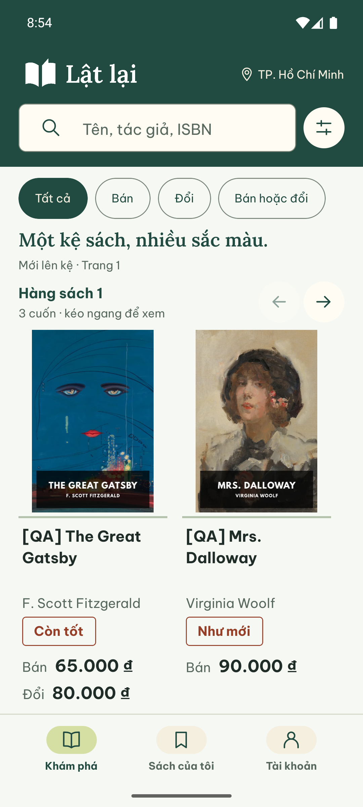
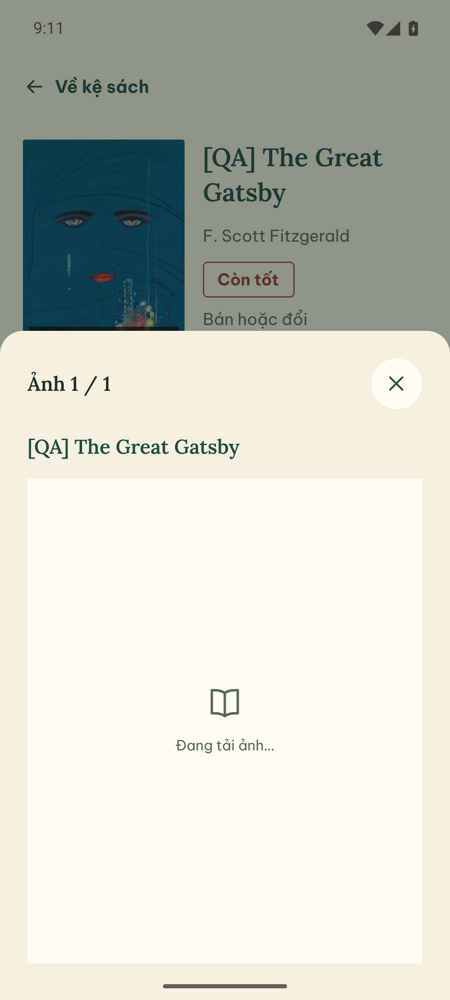
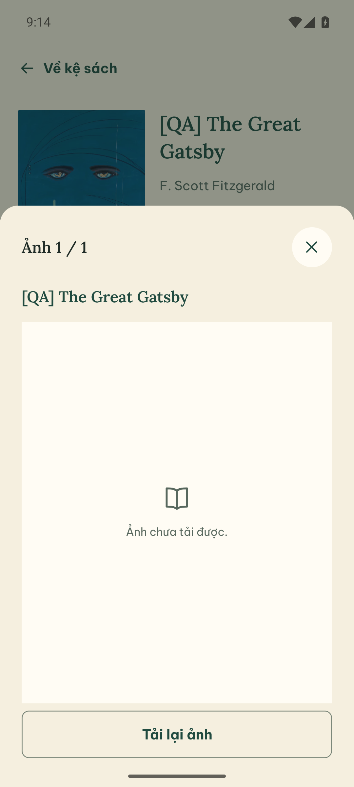
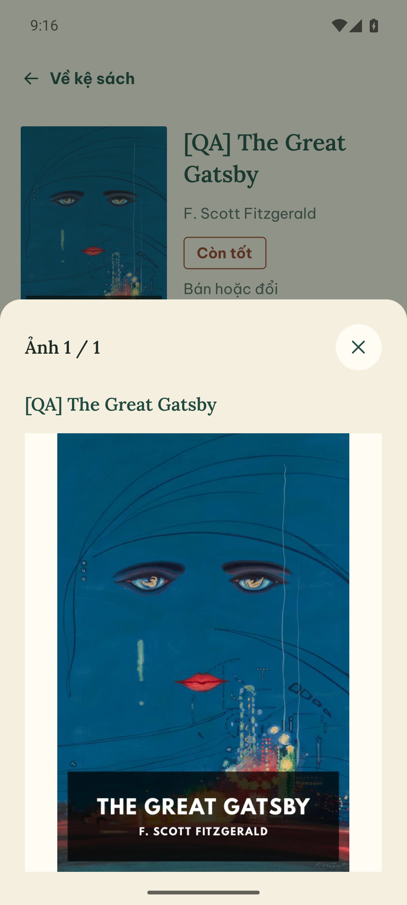
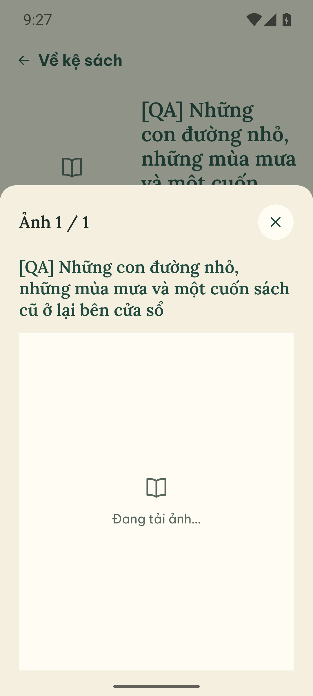
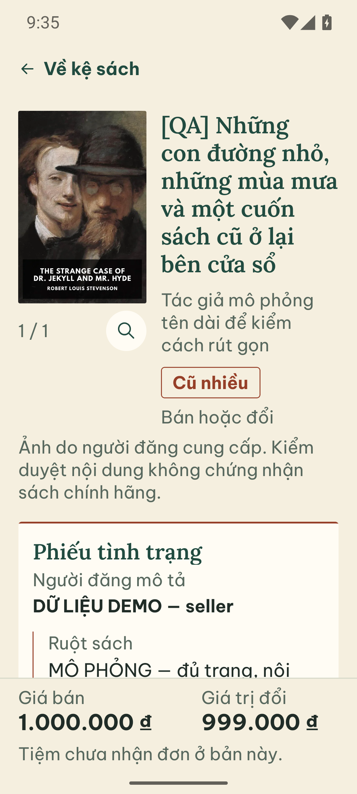
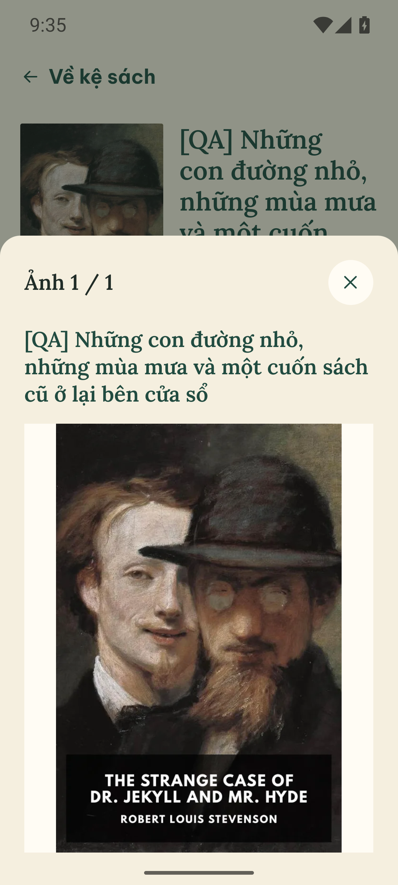
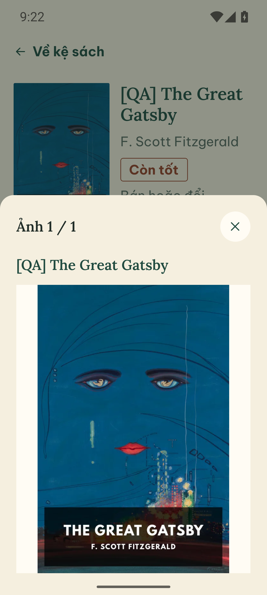

Mỗi lựa chọn dùng ảnh và video được ghi riêng với cỡ chữ Android tương ứng, không phóng ảnh bằng CSS. Ảnh tĩnh để so bố cục; mở video để xem chuyển động.
So thao tác trước / sau
Video được dừng sẵn. Nhấn phát từng bên để xem; có thể tải về để tua và đối chiếu.
So bố cục và thông tin giao dịch


Tải ảnh, lỗi và phục hồi
QA cố ý làm ảnh tải chậm hoặc lỗi để xem phản hồi và thao tác tải lại. Các ảnh bên dưới ghi rõ cỡ chữ riêng, không đổi theo bộ chọn ở trên.






Khi bật giảm chuyển động
Android chữ 130%, animator_duration_scale=0. Đổi thiết lập trên app đang chạy, không khởi động lại app. Video được dừng sẵn để bạn chủ động xem.

Phạm vi chuyển động
Ảnh: khung không đổi khi tải; chỉ ảnh hiện nhẹ, không sửa tình trạng hoặc màu bìa. URL hết hạn/lỗi vẫn bị thu hồi theo cơ chế cũ.
Kệ: chỉ nút qua cuốn dùng cuộn native. Không tự chạy, không thay thứ tự API; focus và thay bộ lọc vẫn chuyển trực tiếp.
Ảnh lớn: nền tối và nội dung mở trong 160 ms; header/nút đóng đứng yên. Đóng ngay để Back và vòng đời ảnh có hiệu lực ngay, không giữ ảnh cũ để làm hiệu ứng thoát.
Giảm chuyển động: theo tùy chọn hệ điều hành, cập nhật trực tiếp; chưa biết tùy chọn thì mặc định giảm. Không có chuyển bìa giữa hai màn hoặc hiệu ứng 3D.